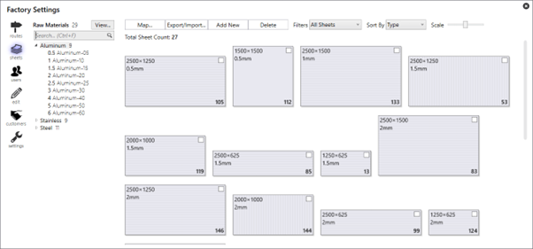
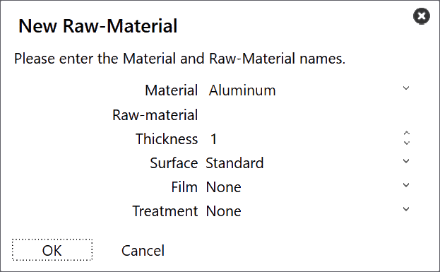
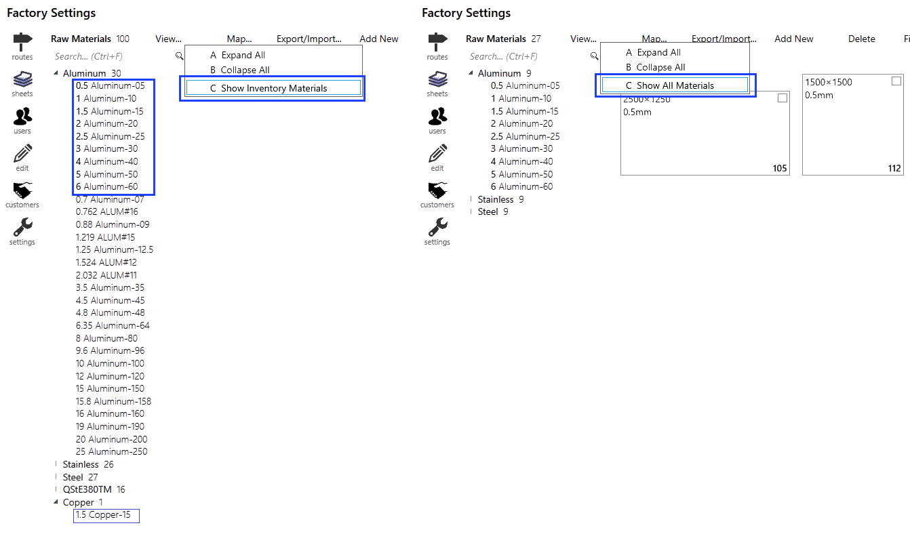
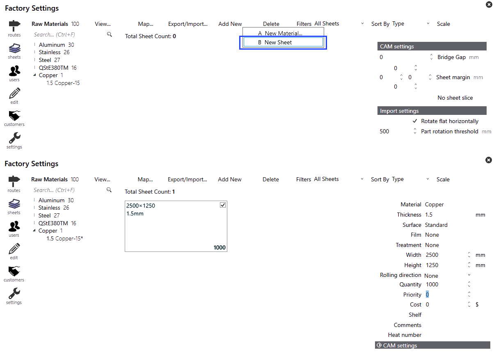

Aggiungi nuovo
È possibile accedere alla gestione delle lamiere facendo clic sull’icona factory. Selezionando Sheets si avrà una panoramica dei materiali che vengono configurati. Facendo clic su uno qualsiasi dei materiali menzionati a sinistra verranno visualizzati lamiere, spessore, dimensioni e quantità disponibili.
Per aggiungere un nuovo materiale, fare clic su Add new → New Material… dalla pagina Lamiere in Fabbrica.

Inserire i parametri Material, Raw Material, Thickness e materiale. Fare clic su OK.

Visualizza materiale
Opzione di visualizzazione in factory → Sheets, sono disponibili le seguenti opzioni:
-
Expand All: espande tutte le categorie di materiali.
-
Collapse All: comprime tutte le categorie di materiali.
-
Show All Materials: elenca tutti i materiali grezzi indipendentemente delle giacenze lamiere.
-
Show Inventory Materials: elenca solo i materiali grezzi che hanno giacenze lamiere.
| Lo spessore del materiale grezzo mostrato in grassetto rappresenta la disponibilità delle lamiere. |

Aggiungi lamiera
Per aggiungere una nuova lamiera, fare clic su Add new → New Sheet dalla pagina Lamiere in Fabbrica. Modifica i parametri lamiera.

| È possibile modificare o eliminare il materiale/lamiera prima che un pezzo venga assegnato al materiale in questione o che il layout venga annidato alla lamiera in questione. |
| La modifica del nome del materiale non è possibile a questo punto. Pertanto, è necessario ricrearne uno nuovo. |